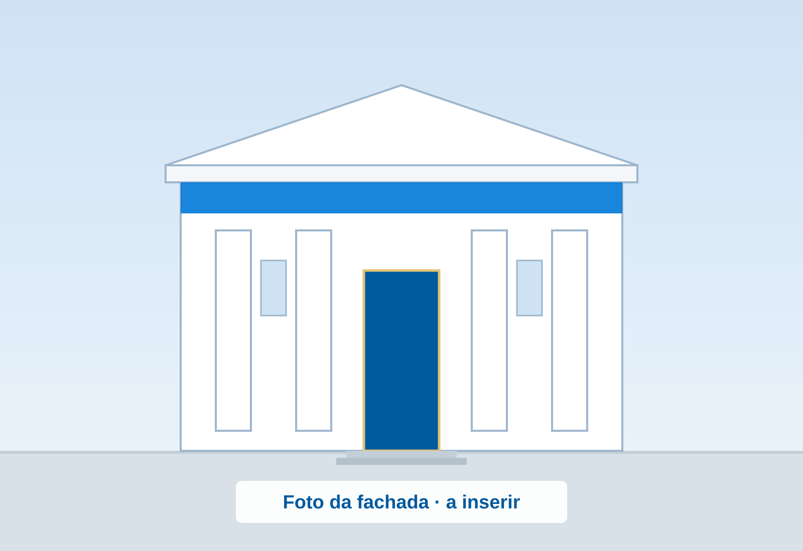

Tabelionato de Jaboticaba
Serviços de cartório, de um jeito simples
Notas, protesto e registros civis e de documentos em um só endereço. Diga o que você precisa e veja os documentos antes de vir.

O que você precisa fazer?
Escreva com suas palavras ou escolha um dos serviços mais procurados.
Não encontramos esse assunto. Tente outras palavras ou fale com o cartório, que indica o serviço certo.
Falar com o cartórioMais procurados
- Registrar um filho recém-nascido Registro Civil das Pessoas Naturais
- Pedir segunda via de certidão Registro Civil das Pessoas Naturais
- Fazer uma procuração Notas
- Reconhecer firma (confirmar uma assinatura) Notas
- Comprar ou vender um imóvel Notas
- Casar (habilitação e casamento civil) Registro Civil das Pessoas Naturais
- Saber se existe protesto em meu nome Protesto de Títulos
- Autenticar cópias de documentos Notas
Serviços
Escolha a especialidade
Cinco atendimentos no mesmo endereço. Toque em um deles para ver os serviços e os documentos.
-
Tabelionato de Notas
Documentos com fé pública
- Escrituras de imóveis
- Procurações
- Reconhecimento de firma
- Cópias autenticadas
-
Tabelionato de Protesto de Títulos
Dívidas e títulos
- Consultar um protesto
- Pagar uma dívida
- Cancelar um protesto
- Cobrar um devedor
-
Registro de Títulos e Documentos
Contratos e documentos
- Registrar contratos
- Notificar alguém
- Certidões de registro
-
Registro Civil das Pessoas Jurídicas
Associações e entidades
- Igrejas, ONGs e associações
- Mudança de diretoria
- Certidões
-
Registro Civil das Pessoas Naturais
Nascimento, casamento e óbito
- Nascimento
- Casamento
- Óbito
- Certidões e segunda via
Antes de vir ao cartório
Venha preparado e evite idas e vindas
Consulte os documentos necessários, as orientações e os modelos disponíveis.
- Documentos necessáriosVeja o que levar, serviço por serviço
- OrientaçõesO que conferir antes de sair de casa
- Modelos e formuláriosEm breve, para baixar e preencher
Localização e atendimento
Como chegar e quando ir
- Endereço
- Rua Victielo Bisognin, 227 — Centro
Jaboticaba/RS — CEP 98350-000 - Horário de atendimento
- Horário a confirmar com o cartório
- Telefone
- Telefone a confirmar
- WhatsApp a confirmar
- E-mail a confirmar
Confira sempre se o contato é um dos canais oficiais divulgados neste site.